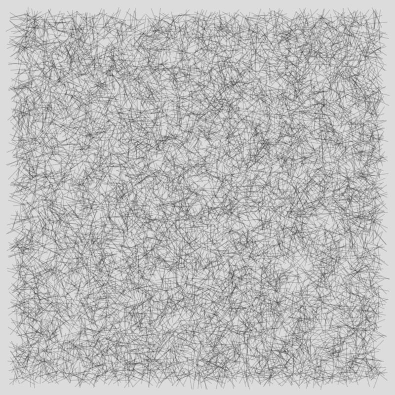
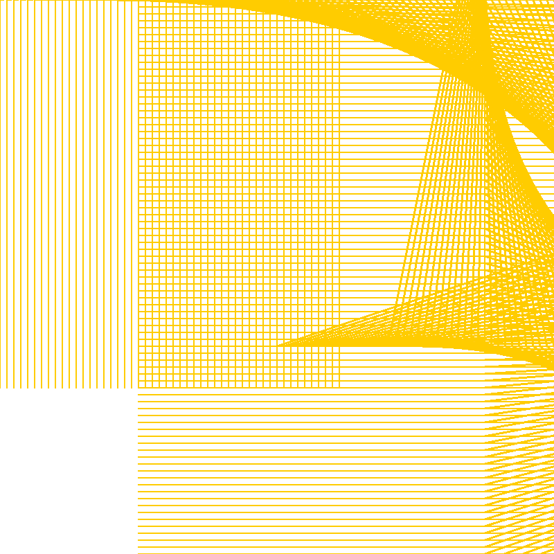
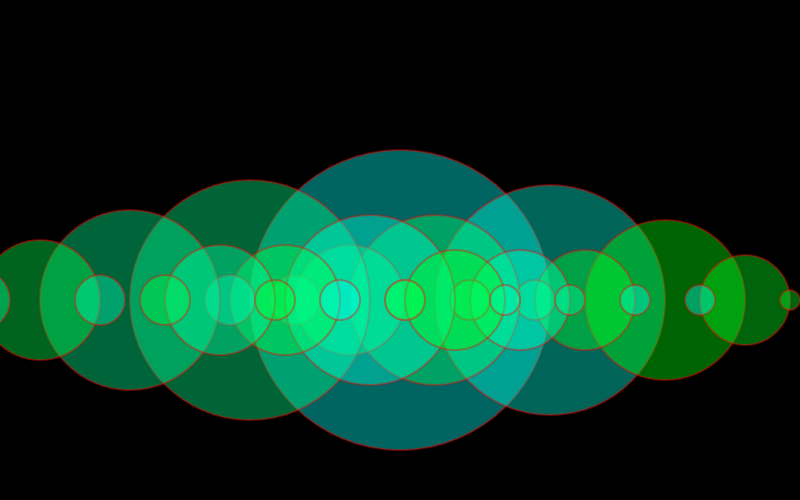
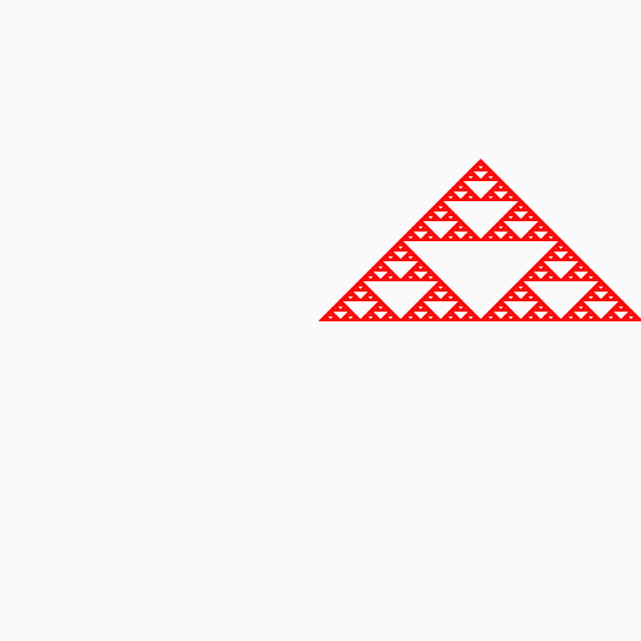

Imagen escrita
Portafolio donde se encuentran trabajos de
Valeria Martinez de Imagen Escrita 2021.
Proyecto
Este proyecto es una abstraccion de la dispersion de la luz que sucede cuando reflejamos un cd al sol. para este trabajo se realizaron ajustes a un codigo ya existente.
Dispersion de la LuzTrabajos
Sliders barras
Circulo que cambia de color segun el sliders que se mueva
 > Sol Lewitt
Ejercicio trabajo en clases donde se emito una obra de Sol Lewitt
 > Sol Lewitt intento
Encargo sirvio para aprender a usar p5, la idea era recrear una obra de Sol Lewitt
 < Recursion
Ejercicio de recursion de circulos

Triangulo de serpinski fue realizado con dificultad.
Ejercicio de clases: Modificar codigo entregado
Boids 2
Ejercicio de Boids: aqui se aprecian su trabajo individual
Timbre 1
Ejercicio que al 3er click hace un cambio de figura.
Timbre 2
Ejercicio que al 3er click hace un cambio de figura y color.